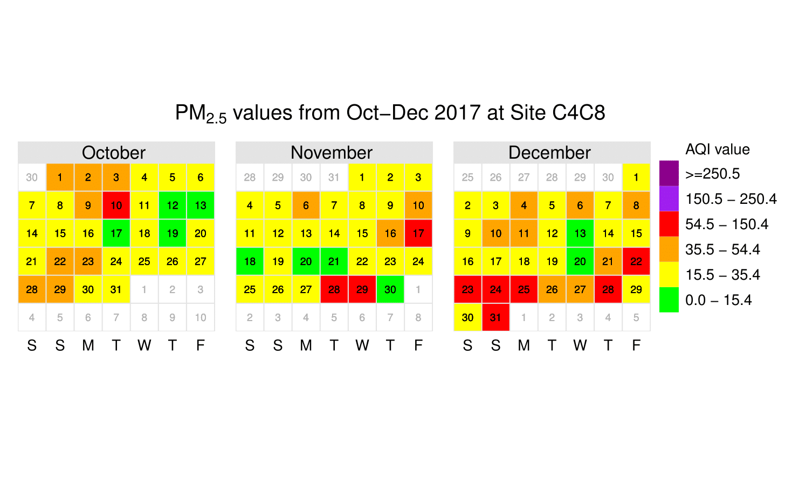

Sys.setlocale(category='LC_ALL', locale='C')
# 資料匯入與預處理
site_location = read.csv(file.path("datasets", "location.csv"), encoding="UTF-8", stringsAsFactors=FALSE)
site_location = site_location[ , c("id","lon","lat")]
site_location$nid = substr(site_location$id,9,12)
site_all = read.csv(file.path("datasets", "site_all.csv"), encoding="UTF-8", stringsAsFactors=FALSE)library(leaflet)
library(dplyr)
library(openair)
library(dygraphs)
library(maps)
library(ggplot2)
library(ggmap)
#library(mapproj)
library(plotly)map_location <- leaflet(site_location) %>%
setView(lng=120.595,lat=24.265,zoom=12) %>%
addTiles(options = providerTileOptions(noWrap = TRUE)) %>%
addCircleMarkers(~lon,~lat,label=~nid,radius=8,color="white",fillColor="red",stroke=TRUE,fillOpacity=0.8)
map_location.
呈現觀測點 2017年10~12月份 三個月份的空氣品質狀況。
從日曆圖看出10月份PM2.5濃度達紅色警戒的天數多集中在10號、11號，而11月份則是多集中在17號、28號。 回顧新聞事件，29號是入秋最強一波空污來襲，多處測站則是在28號的時候，就發現空氣品質達紅色警戒。 比較令人注意的是12月底的空氣品質狀況，從22號開始到月底，幾乎天天都達紅色警戒，受東北季風影響，霾害嚴重。
plot_calendar <- function(x){
nid = substr(x,9,12)
dta = read.csv(file.path("datasets/airdata_DP", x), stringsAsFactors=FALSE)
dta$date = as.POSIXct(strptime(dta$date, format= "%Y-%m-%d %H:%M:%S", "GMT"))
cplot = calendarPlot(dta, main =paste0("PM2.5 values from Oct-Dec 2017 at Site ", nid),
key.header="AQI value",
digits = 20,
pollutant = "PM2.5", annotate = "date", year = 2017, breaks = c(0,15.4,35.4,54.4,150.4,250.4,350.4),
labels = c("0.0 - 15.4","15.5 - 35.4","35.5 - 54.4","54.5 - 150.4","150.5 - 250.4",">=250.5"),
cols = c("Green", "Yellow", "Orange", "Red", "Purple","darkmagenta"))
dev.print(pdf, file.path("visuals/calendar", paste0("cplot_", nid, ".pdf")))
}par(mfrow=c(34,1))
temp = list.files(path="datasets/airdata_DP", pattern="*.csv")
lapply(temp, plot_calendar)
plot_table <- function(x){
nid = substr(x,9,12)
dta = read.csv(file.path("datasets/airdata_DP", x), stringsAsFactors=FALSE)
dta_TB = dta %>%
group_by(nmonth, ndate) %>%
summarise(PM2.5 = mean(PM2.5)) %>%
mutate(category=cut(PM2.5, breaks=c(-Inf, 15.4, 35.4, 54.4, 150.4, 250.4, Inf),
labels=c("cg","cy","co","cr","cp","cb")))
dta_TB = as.data.frame.matrix(with(dta_TB, table(nmonth, category)))
rownames(dta_TB) <- c("Oct","Nov","Dec")
colnames(dta_TB) <- c("Good","Moderate","Unhealthy for Sensitive Groups","Unhealthy","Very Unhealthy","Hazardous")
dta_TB$id <- nid
write.csv(dta_TB, file.path("datasets/airdata_TB", x))
}temp = list.files(path="datasets/airdata_DP", pattern="*.csv")
lapply(temp, plot_table)